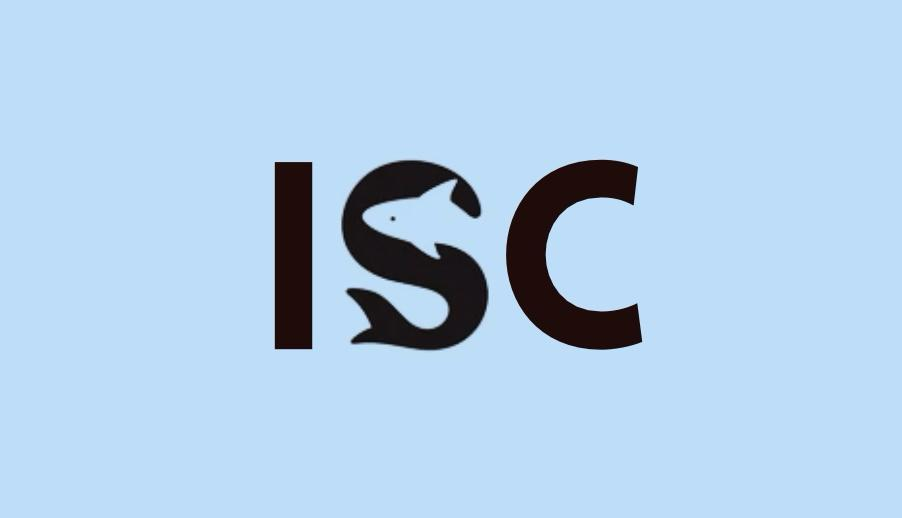
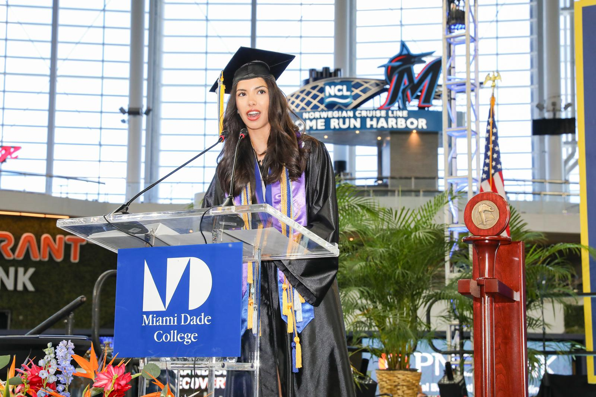
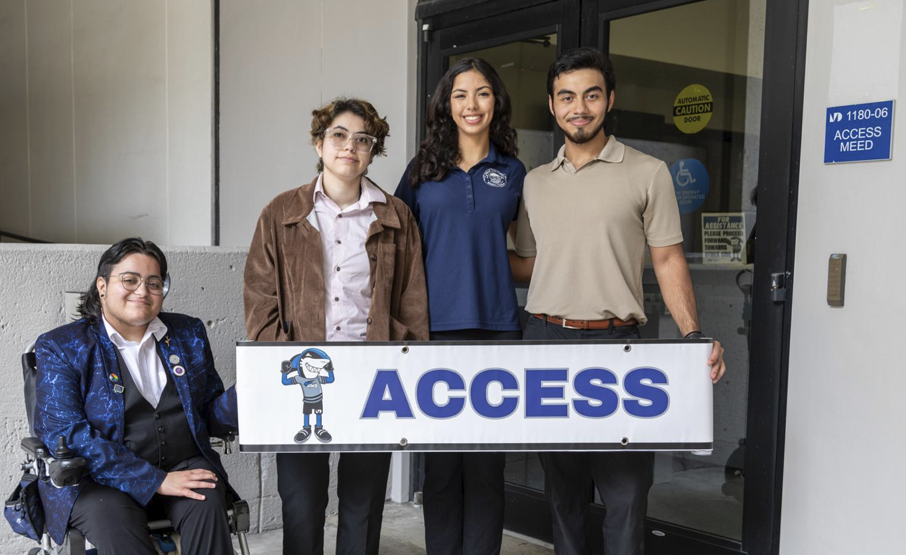

02 / LEADERSHIP & SERVICE
Ideas into impact.
Leadership, to me, is a team sport. It's about building people up, bridging gaps, and bringing us all together.
FOUNDING & TEAM LEADERSHIP
01

Designed ISC Logo using Canva
Intramural Sports Club
Founder, President & Soccer Team Captain
Founded and grew a student organization to more than 200 members, becoming the largest club on campus.
Lead recruitment of 16 executive board members, scheduling of weekly events and team practices, budget management,
and friendly commpetitions across the city against local intramural teams.
Established partnerships with the Miami Marlins and Miami Heat
to connect campus programming with the greater Miami community.
Through BeMDC, liaised for Marlins merchandise to be provided to students.
Through the Student Life Department, acquired 5-10 free Miami Heat tickets for weekly games.
Organized transport with the Athletics department from Wolfson to Kendall campus (30 minutes-1 hour) to raise school athletic spirit and club culture.
Entrepreneurship
Team leadership
Partnerships
OCT 2023 — APR 2024
STUDENT ADVOCACY
02

Graduation Ceremony Commencement Speech
Student Government Association
Student Government President · Wolfson Campus
Represented over 27,000 Wolfson Campus students, standardized recruitment
and interviews for more than 10 student leadership roles, and oversaw
44 clubs and organizations. Spearheaded the 1st annual Winter Formal,
collecting over 200 pounds of food to donate to a local food bank during the holiday season.
Established Accessibility and Health & Wellness Committees to
expand student advocacy, inclusion, and well-being initiatives.
Delivered over 15 speeches to students, administration, faculty, stakeholders, and generaly community members, ranging from
ribbon cutting ceremonies with 100+ members in attendance to MDC's 2025 Commencement Ceremony with 10,000+ members in attendance.
Served as Council of Student Organizations (CSO) Chair, overseeing 44 student clubs, ensuring compliance with Student Life policies, and leading monthly meetings with club executives to monitor progress, reinforce accountability, share cross-organizational updates, and provide guidance on club operations and leadership challenges.
Student Advocacy
Public Speaking
Community Service
MAR 2024 — JUN 2025
ACCESSIBLE COMMUNICATION
03

Student Government Association and Disability Pride Club Collaboration
Disability Pride Club
Founding Officer & Secretary
Established cross-city collaborations with Florida International University’s American Sign Language Club to strengthen intercollegiate engagement and disability advocacy.
Fostered an inclusive space for students of all abilities to explore disability rights, representation in media, and prominent figures in disability history.
Collaborated with Disability Pride Club members as Aspen Young Leaders Fellows to design a civic service project using ASL education to address communication and accessibility barriers.
Led data-informed workshops during National Disability Employment Awareness Month to promote disability inclusion in the workplace and raise awareness of accessible hiring practices.
Hosted a workshop for the Wolfson AI Society focused on accessible technology and the disability tech industry, encouraging students to explore emerging career opportunities in disability innovation.
Accessibility
Inclusion
Education
DEC 2023 — APR 2025
FOUNDING & TEAM LEADERSHIP
04
Pending Approval for Spring 2027
HR and I/O Psychology Club
Founder & President
Spearheading the development of a student organization bridging human resources and industrial/organizational (I/O) psychology through professional development, networking, and career exploration.
Drafting the club's constitution and coordinating with UF officials to secure organizational approval. Leading membership development through student outreach, candidate vetting, and recruitment, with a goal of establishing a founding membership of 10+ students and a four-member executive board.
Human Resources
Recruitment
Organizational Development
AUG 2026 — PRESENT